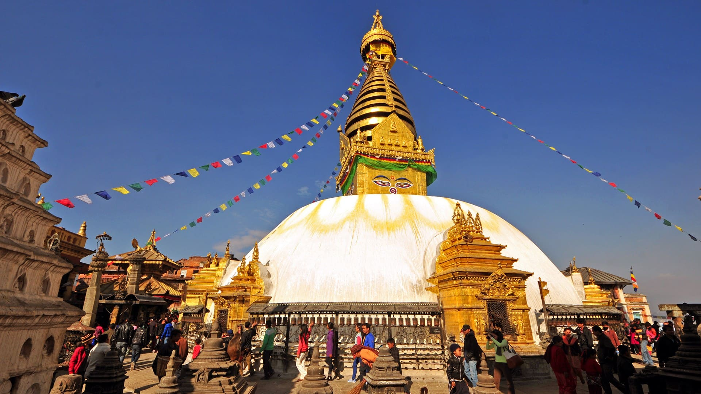
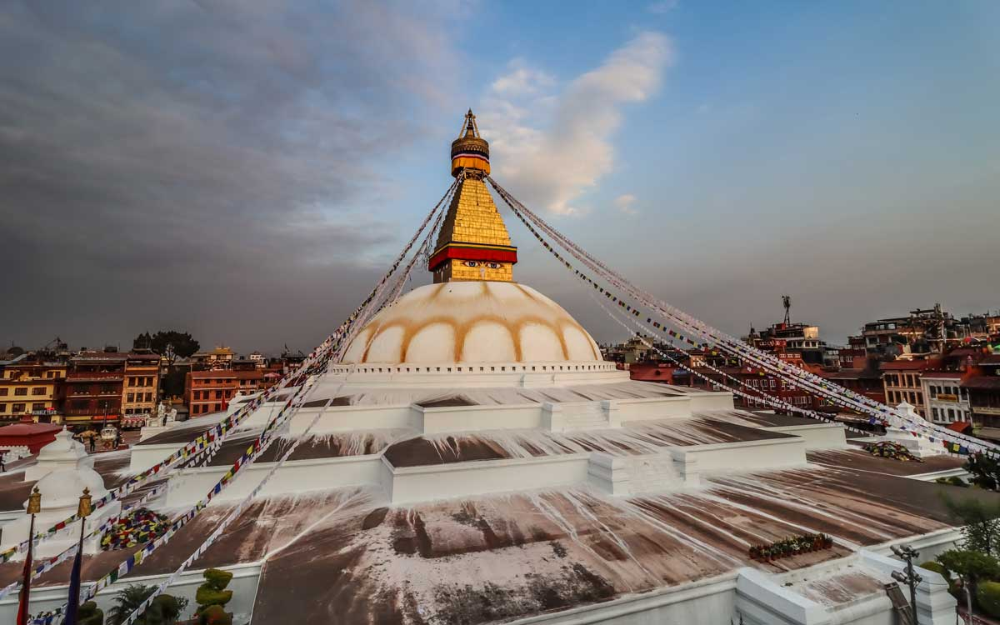
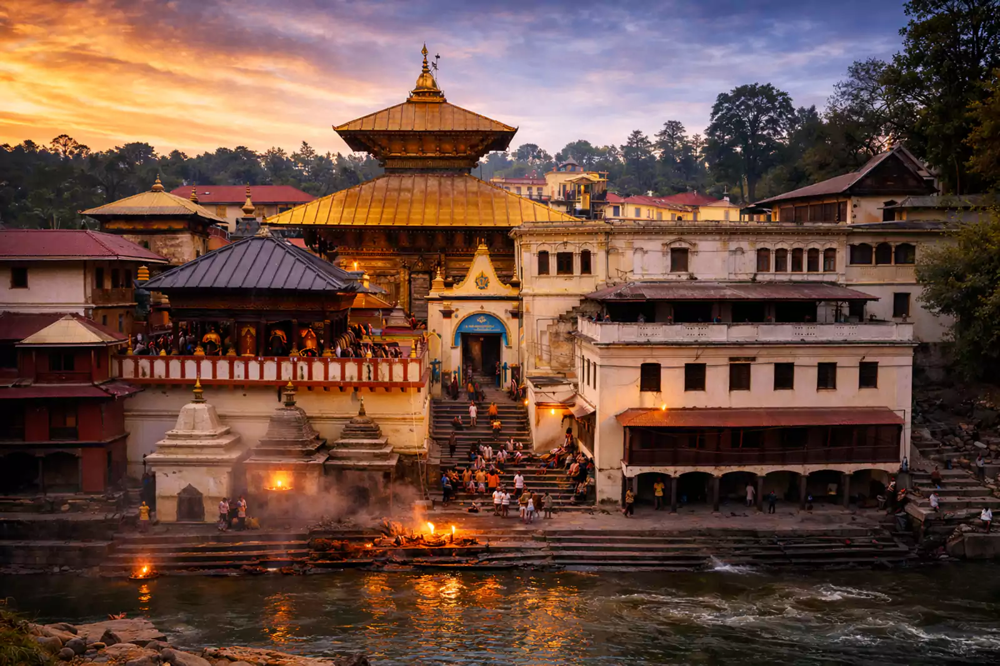
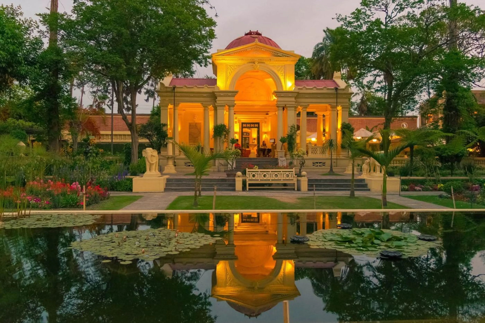
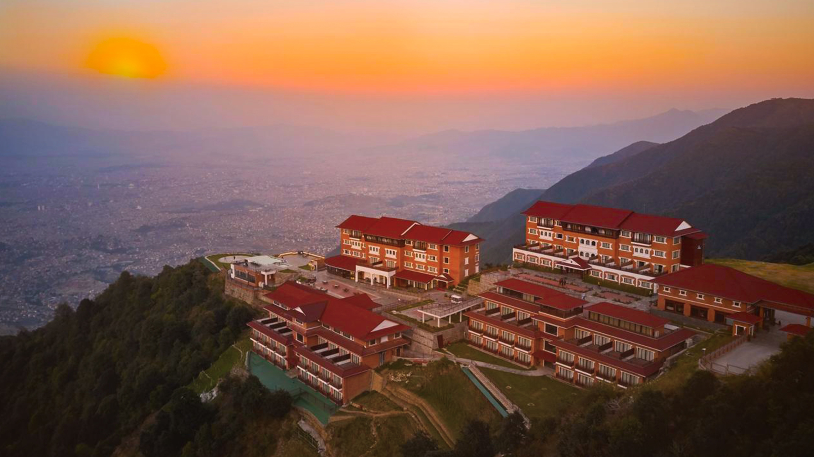
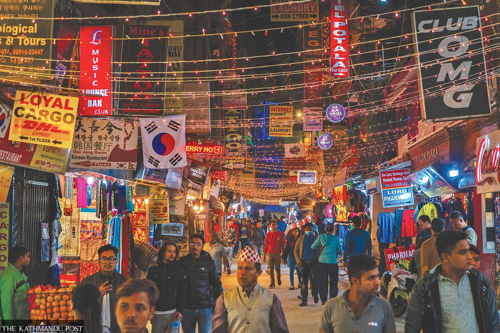

A little valley of temples
Places to Visit in Kathmandu
Explore seven landmarks in the heart of Nepal with a responsive, looping image slider.
Meet the Places
Use the arrows or choose a dot to explore each place.

Swayambhunath Stupa
Explore the ancient Monkey Temple and enjoy breathtaking views of Kathmandu Valley.

Boudhanath Stupa
Discover a magnificent Buddhist stupa surrounded by prayer flags and peaceful monasteries.

Pashupatinath Temple
Experience Nepal's sacred Hindu heritage along the beautiful banks of the Bagmati River.

Kathmandu Durbar Square
Explore historic palaces, ancient temples, and the beauty of traditional Newari architecture.

Garden of Dreams
Relax in a peaceful garden filled with beautiful greenery, fountains, and elegant architecture.

Chandragiri Hills
Enjoy stunning Himalayan views, lush hills, and an unforgettable cable car experience.

Thamel
Discover lively streets filled with cafés, restaurants, souvenir shops, and local culture.
Why visit Kathmandu?
Nepal's capital is a valley city where Hindu and Buddhist traditions share the same streets. Its stupas, temples, and old royal squares sit minutes from gardens, cafés, and busy markets, so one trip can cover heritage, relaxation, and mountain views.
Quick Kathmandu fact
- Swayambhunath sits on a hilltop and offers wide views over Kathmandu Valley.
- Boudhanath is one of the largest stupas in the world and a centre of Tibetan Buddhism in Nepal.
- Pashupatinath is a major Hindu temple complex on the banks of the Bagmati River.